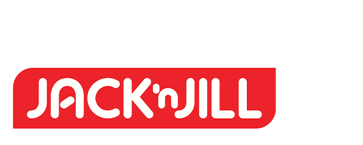

Maximizing the Minimalism
We aimed to revolutionize the gaming industry by making gaming devices more relevant and forward-thinking. To achieve this, we partnered with Dell Austin Experience Design Group and developed the overall strategy and visual design language for Alienware, eventually applying it to the 55" TV and gaming headphones.Empowering Urban Mobility Lifestyles
Homm is a research and future-casting project focused on autonomous transport vehicles, with an investigation of the shift in usage from a spatial experience lens. The project aims to democratize the interior space of transport vehicles, allowing users to plan and select specific interiors, and usher in a new urban living with an interconnected relationship between humans, vehicles, and surroundings.Traditional Craft Reimagined
The National Heritage Board challenged us with reimagining traditional crafts into modern and innovative products that reflect Singapore's cultural heritage. To achieve this, we worked with a Traditional Lantern Maker to re-envision the symbolism and stories of paper lanterns. Our collaboration resulted in the creation of the Harmony Spheres Lamp, a contemporary take on traditional lanterns.Building Food Confidence
We collaborated with SFA to create a logo that embodies their core mission. The logo features iconic representations of a leaf and fish that have been thoughtfully redrawn while maintaining their qualities. The interlocking elements symbolize collaboration and the graphical elements combine to form a shield that conveys a sense of safety and protection.Showcasing Nature’s Gift
Our work on the brand expression for Hegen is articulated through the simple yet premium-looking packaging. Composed of clear film with the brand elements we developed and structural caps to maintain a 3-dimensional rounded square form, the see-through packaging creates a stage for showcasing the milk bottles.
